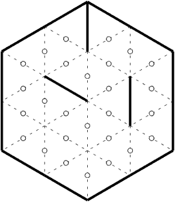
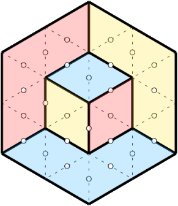
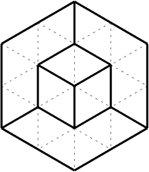

cliquez/tapez pour choisir le mode de jeu
Taille maximale de grille (Speedy) :
(lisez la suite si vous ne savez pas jouer)
Dessiner entièrement les frontières des domaines remplissant entièrement un hexagone, chaque domaine étant rempli
avec des losanges (ou "calissons") de même orientation (même couleur). Un calisson est formé de l'assemblage de
deux triangles équilatéraux ayant un côté commun.
Les domaines sont séparés par des arêtes tracées en trait plein, les positions des arêtes à
déterminer sont tracées en pointillés, avec un petit cercle au milieu.
Deux règles sont à respecter :
Pour rendre le pavage unique, certaines arêtes sont fixées au départ :

Pavage avec les calissons :

Pour gagner, il faut dessiner les frontières des domaines, en s'aidant au besoin du coloriage des calissons :

position gagnante
Le pavage de l'hexagone peut s'interpréter comme la projection isométrique d'un empilement de petites caisses cubiques dans une grande pièce elle-même cubique. Les caisses sont empilées en les poussant dans la pièce le plus loin possible, les piles étant de hauteurs croissantes vers les murs du fond.
Cette vision du jeu permet souvent de se passer des calissons pour obtenir la solution !
Sur ordinateur, le dessin des arêtes manquantes s'effectue avec un clic-gauche sur le milieu de l'arête tandis que le coloriage d'un calisson est obtenu par un clic-droit sur le centre du losange.
Sur tablette/téléphone/écran tactile, le toucher du milieu d'une arête provoque le dessin de l'arête ou le coloriage du losange en fonction de l'état d'un bouton de l'interface.
Remarques facilitant la résolution :
Solution d'une grille de taille 3 en utilisant les règles de l'angle aigu et du pli, avec dessin de tous les calissons.
Avec de l'entraînement, on peut souvent se passer des calissons !
Dans ce mode, la durée du jeu n'est pas limitée et il est possible de choisir la taille et le niveau des grilles à résoudre dans une liste déroulante.
Pour chaque grille résolue, le score obtenu est affiché, et une nouvelle grille est proposée.
En cas de changement de niveau, la grille en cours est abandonnée.
Ce mode vous permet de mettre à l'épreuve votre maîtrise du jeu !
Le but est d'obtenir en un temps limité le score total le plus grand possible, en résolvant des grilles de taille et difficulté croissantes analogues à celle de la page d'entraînement (mais les grilles sont différentes !).
La taille de l'écran d'un smartphone étant limitée, il peut être difficile de jouer avec les grilles de taille
importante. Pour faciliter le jeu dans ces conditions, il est possible de fixer la taille maximale des grilles
qui seront proposées à l'aide de la liste déroulante située sous les boutons de lancement du jeu.
Le score
obtenu pour chaque grille augmente avec cette taille maximale afin que la durée du jeu reste sensiblement
constante.
Dans les deux modes, deux boutons permettent de modifier le déroulement du jeu :
Pour revenir à l'écran d'accueil depuis les pages de jeu, cliquer sur la maison en haut à gauche

Quand on joue sur ordinateur, il est possible de dessiner des calissons (ou losanges) en effectuant un clic-droit avec la souris sur le milieu d'une arête.
Sur un dispositif à interface tactile où le clic-droit est impossible, les pages de jeu affichent entre les boutons Reset et Abandon un indicateur du mode d'action d'une pression sur le mileu d'une arête : tracé d'une arête (Mode arête) ou d'un losange (Mode losange). Il suffit de taper sur l'indicateur pour changer de mode.
Pour obtenir un score important, il faut :
Le score pour chaque grille augmente avec sa taille et sa difficulté :
"Speedy Calisson" est inspiré du jeu du Calisson, inventé par Olivier LONGUET. Pour une présentaton, s'informer sur les techniques de résolution et se confronter aux grilles proposées par l'auteur, vous pouvez vous rendre sur le site d'origine.
Le code de la zone de jeu a été modifié à partir du code initial d'Arnaud DURAND.
Tous les contenus mentionnés sont sous licence Creative Commons CC-BY-SA-NC
contact : martial.tarizzo (at) gmail . com